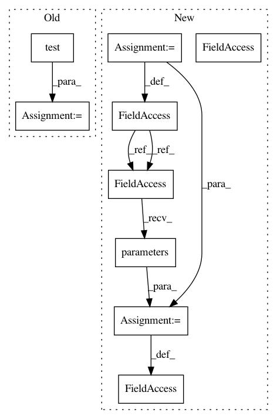

e2db3b3f1d3d23cd5bc1e295835e0f4b33e95447,examples/cora_gcn.py,,,#,57
Before Change
val = test(val_mask)
if val > old_val:
old_val = val
cur_test = test(test_mask)
acc.append(cur_test)
print("Run:", run, "Test Accuracy:", acc[-1])
After Change
return F.log_softmax(x, dim=1)
model = Net()
if torch.cuda.is_available():
train_mask, val_mask = train_mask.cuda(), val_mask.cuda()
test_mask, model = test_mask.cuda(), model.cuda()
optimizer = torch.optim.Adam(model.parameters(), lr=0.01, weight_decay=0.005)
def train():
model.train()
In pattern: SUPERPATTERN
Frequency: 3
Non-data size: 9
Instances
Project Name: rusty1s/pytorch_geometric
Commit Name: e2db3b3f1d3d23cd5bc1e295835e0f4b33e95447
Time: 2018-03-07
Author: matthias.fey@tu-dortmund.de
File Name: examples/cora_gcn.py
Class Name:
Method Name:
Project Name: rusty1s/pytorch_geometric
Commit Name: 04ad358395c7bd074ffb9af235ccb76d2c0dc4cc
Time: 2020-07-01
Author: matthias.fey@tu-dortmund.de
File Name: examples/pna.py
Class Name:
Method Name:
Project Name: rusty1s/pytorch_geometric
Commit Name: e2db3b3f1d3d23cd5bc1e295835e0f4b33e95447
Time: 2018-03-07
Author: matthias.fey@tu-dortmund.de
File Name: examples/cora_gcn.py
Class Name:
Method Name:
Project Name: jindongwang/transferlearning
Commit Name: 376b01c2e338ec63e638f62a76d67f6a9323e47c
Time: 2019-08-14
Author: jindongwang@outlook.com
File Name: code/deep/DeepCoral/DeepCoral.py
Class Name:
Method Name: